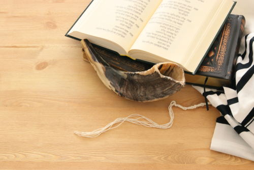
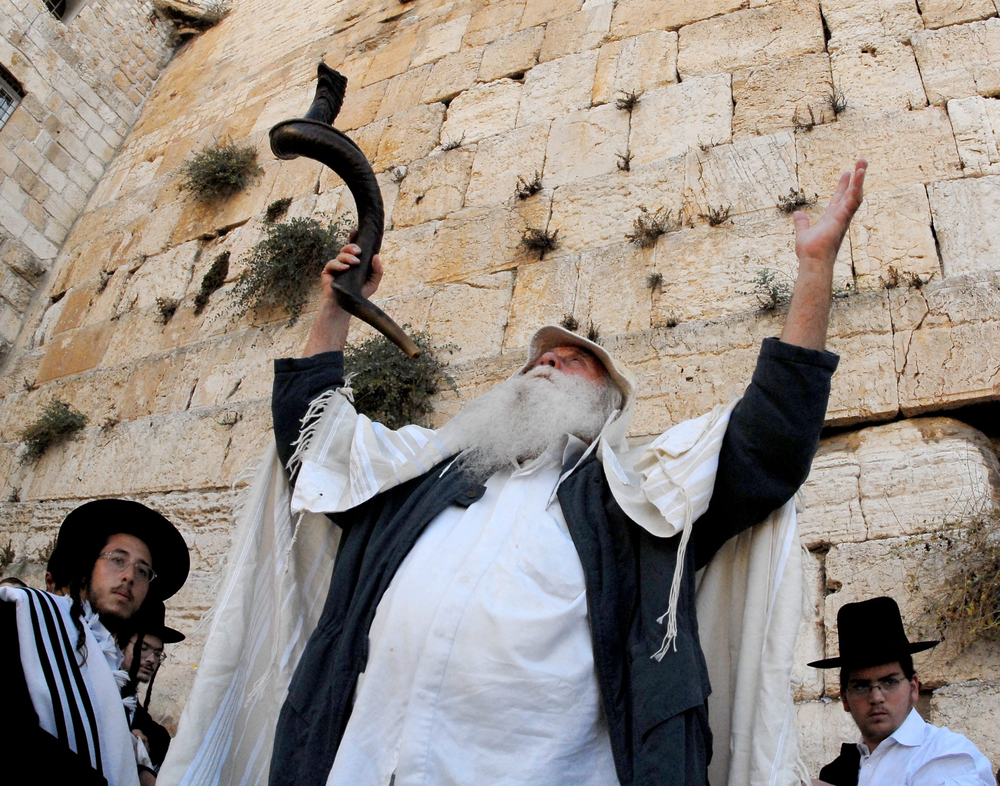

התרת נדרים
בערב ראש השנה נהוג לערוך טקסי התרת נדרים, כשכל אדם מבקש התרה בפני שלושה אנשים שמהווים מעין בית דין, שבכוחו לשחרר את האדם מהבטחותיו.
איחולים וכרטיסי ברכה
נהוג לאחל בליל ראש השנה "לשנה טובה תיכתב/י ותחתם/י", ויש המוסיפים "לאלתר לחיים טובים". החל מהמאה ה-14 נהגו לשלוח איחולים כאלה בכתב לפני ראש השנה. מסוף המאה ה-19, לאחר המצאת גלויות הדואר, נפוץ מאוד מנהג שליחת כרטיסי ברכה שהוכנו עבור החג. מסוף המאה ה-20 דעך השימוש בכרטיסי נייר והוחלף בברכות טלפוניות ובשיגור ברכות בדואר אלקטרוני ובפלטפורמות לשיתוף ולהעברת מסרים מיידיים.
תשליך
ביום הראשון של ראש השנה (או ביומו השני במקרה שהיום הראשון חל בשבת לפי מנהג האשכנזים), הולכים אחרי הצהריים למקור מים ואומרים בו את תפילת תשליך, שהיא בקשה להשלכת העבירות אל "מצולות ים". במקומות שבהם לא היו מקווי מים קרובים נהגו לעלות למקום גבוה שממנו צופים עליהם. מקובל לנער את שולי הבגדים כסמל להתנערות מהעוונות, יש שהתנגדו למנהג זה.
הימנעות משינה ביום
הימנעות משינה ביום: יש הנוהגים להימנע משינה ביומו של ראש השנה, על פי דברי התלמוד הירושלמי שהובאו אצל הפוסקים, שהישן בראש השנה ישן מזלו.
ראש השנה
יום ראשון, כ"ט באלול תשע"ט, 29 בספטמבר 2019
"בראש השנה, כל באי עולם עוברין לפניו כבני מרון,
שנאמר
'היוצר יחד, לִבם; המבין, אל כל מעשיהם'."
(משנה מסכת ראש השנה)

ראש השנה החל בחודש תשרי הוא חג מהתורה ואחד מראשי השנה העבריים. הוא מצוין בימינו כחג יהודי בא' וב' בתשרי. א' בתשרי נחשב במסורת היהודית ליום המלכת האלוהים על האנושות, וליום דין שבו נידון האדם על השנה שעברה ונקבע מה יארע לו בשנה הבאה. כמו כן, יום זה נחשב ליום הראשון בשנה לצורך מניין השנים בלוח העברי ולצורך מניין שנות שמיטה ויובל. על פי המקרא, היום הראשון של החודש השביעי (הוא תשרי, במניין החודשים המתחיל בחודש ניסן) יום מועד ששובתים בו ממלאכה ומקריבים בו קורבנות מיוחדים. עיקר החג הוא מצוות ה"תרועה" שמוזכרת הן בספר ויקרא והן בספר במדבר: "דַּבֵּר אֶל בְּנֵי יִשְׂרָאֵל לֵאמֹור בַּחֹדֶשׁ הַשְּׁבִיעִי בְּאֶחָד לַחֹדֶשׁ יִהְיֶה לָכֶם שַׁבָּתוֹן זִכְרוֹן תְּרוּעָה מִקְרָא קֹדֶשׁ. כָּל מְלֶאכֶת עֲבֹדָה לֹא תַעֲשׂוּ וְהִקְרַבְתֶּם אִשֶּׁה לַ-ה'." (ויקרא כ"ג-כ"ה)"וּבַחֹדֶשׁ הַשְּׁבִיעִי בְּאֶחָד לַחֹדֶשׁ מִקְרָא קֹדֶשׁ יִהְיֶה לָכֶם כָּל מְלֶאכֶת עֲבֹדָה לֹא תַעֲשׂוּ יוֹם תְּרוּעָה יִהְיֶה לָכֶם. וַעֲשִׂיתֶם עֹלָה לְרֵיחַ נִיחֹחַ." (במדבר כ"ט, א'-ו'). 
המצווה המרכזית של ראש-השנה היא התקיעה בשופר. "יום תרועה יהיה לכם". תקיעת השופר מציינת כי ביום זה אנו ממליכים את הקב"ה למלך על כל הארץ. בין הפסוקים הנאמרים בתפילת ראש-השנה, בנוגע לתקיעת השופר, אנו מוצאים: "כי ה' עליון נורא, מלך גדול על כל הארץ... עלה אלוקים בתרועה, ה' בקול שופר". טעם נוסף לתקיעת השופר - לעורר זכות אבות, כדי שישמשו לנו מליצי יושר ויגנו עלינו בדין. ברגעים הנשגבים של יום-הדין, אנו תוקעים בשופר, העשוי מקרנו של איל, ומזכירים בכך לפני הקב"ה את עמידתו בניסיון של אברהם אבינו, כאשר לפי מצוות הקב"ה עמד להקריב את בנו יחידו - יצחק - קרבן לה', הדבר נמנע ברגע האחרון, לאחר שכבר הניף את הסכין, כאשר מלאך ה' קרא לאברהם לעצור. עיני אברהם הבחינו לפתע באיל שנאחז בקרניו בסבך. את האיל הקריב לקרבן תחת בנו. ביחס לכך אמרו חז"ל: "תקעו לפני בקרן של איל, כדי שאזכור לכם עקידת יצחק בן אברהם ויעלה זיכרונם לפני". וטעם נוסף - להזכיר את מעמד הר-סיני, שבו התחייב העם, פה אחד, "נעשה ונשמע". מתן התורה בהר-סיני היה מלווה ב"קול שופר חזק מאד". תקיעת השופר בראש-השנה מזכירה את מעמד הר סיני - מתן תורה - שבו כרת ה' ברית עם בני ישראל. 
ראש דג או כבש–"שנהיה לראש ולא לזנב".
תפוח בדבש- "יהי רצון מלפניך, ה' אלוהינו ואלוהי אבותינו, שתתחדש עלינו שנה טובה ומתוקה, מראש השנה ועד אחרית השנה" ברוך אתה ה', אלוהינו מלך העולם, בורא פרי העץ.
תמר-"יהי רצון מלפניך, ה' אלוהינו ואלוהי אבותינו, שייתמו אויביך ושונאיך ועל מבקשי רעתנו, ייתמו חטאים מן הארץ, ורשעים עוד אינם".
רימון–" יהי רצון מלפניך, ה' אלוהינו ואלוהי אבותינו, שנהיה מלאים מצוות כרימון".
חלה מתוקה-"שהשנה החדשה תהיה נעימה ומתוקה".
סלק-" יהי רצון שיסתלקו שונאינו".
דלעת–"יהי רצון שתקרע רוע גזר דיננו ויקראו לפניך זכיותינו".
העוגה קלה להכנה וטעמה מצוין. קחו בחשבון שהעוגה האפויה צריכה לנוח ו”להבשיל” שבעה ימים עד האכילה.
50 דק'
כל אחד יכול
כשר
-
מצרכים
- 380 גרם קמח
- 300 גרם סוכר
- 4 ביצים
- 2 כפות גדושות של קינמון
- 500 גרם דבש
- 2 כפות קפה נמס
- כוס שמן
- כוס מים רותחים
- 2 כפיות שטוחות אבקת סודה לשתייה
- שליש כוס צימוקים
- חצי כוס אגוזי מלך שבורים
- מחממים תנור ל-170 מעלות.
- מערבבים בקערה קמח, סוכר וקינמון. יוצרים גומה ומוסיפים דבש, שמן וביצים. מערבבים לבלילה חלקה במתרפה ידנית או במיקסר.
- ממיסים אבקת קפה נמס בכוס מים רותחים. מוסיפים אבקת סודה לשתייה. מוסיפים את תערובת הקפה לבלילה. מוסיפים צימוקים ואגוזי מלך ומערבבים בעדינות.
- מחלקים את התערובת ל-3 תבניות משומנות ואופים כ-45 דקות, עד שפני העוגה שחומים וקיסם המוכנס לתוכה יוצא יבש.
- מקררים את העוגות היטב. עוטפים אותן היטב ברדיד אלומיניום ומניחים במקום קריר ויבש, אבל לא במקרר, להבשלה.